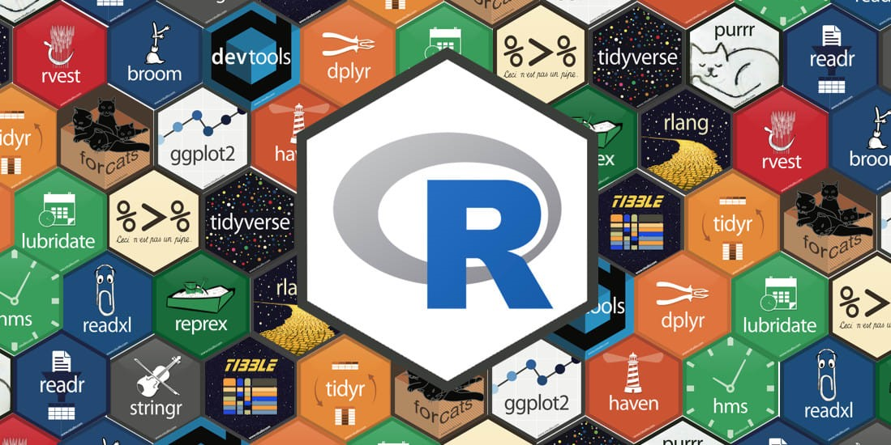

library(knitr)
include_graphics("tidyverse_1.jpeg")
Para os iniciantes em análise de dados, o software R é uma excelente opção para iniciar os estudos. Ele é um software livre, que oferece uma vasta gama de funções e possui uma tipagem dinâmica. Nesta seção o objetivo será fornecer uma visão geral do software, pacotes, assim como de funções básicas e essenciais que são utilizadas rotineiramente na rotina de análise de dados.
A linguagem de programação R é multi-paradigma, suportando orientação a objetos, programação funcional e é fracamente tipada. Ela é voltada para a manipulação, análise e visualização de dados.
O R é um software livre para computação estatística e gráficos, capaz de compilar e executar uma variedade de funções de bibliotecas e pacotes. Para instalar o R, acesse https://cran.r-project.org/ e faça o download para o sistema operacional do seu hardware. Atualmente, estamos na versão 4.4.1 ““Race for Your Life”, na qual este projeto está sendo executado. Para citar o uso do Software basta usar citation(). Para realizar o update do Software, basta execultar update().
Interface/extensão do Softaware R que facilita o uso do Software. Pode ser baixada pelo site https://posit.co/download/rstudio-desktop/.
Mantém os scripts R, documentos de R Markdown, funções R e dados prontos em apenas um local. Cara projeto cria um próprio diretório, espaço de trabalho, histórico e c=documentos de origem. Para criação de um projeto basta: File -> New Project -> “nomear seu projeto” -> Geração de um pasta que conterá seu projeto R.
Para faciliar o uso pode executar seu script na extensão Quarto Document, onde é possível fazer a criação de “chunks”. Depois de criar o seu projeto basta: New File -> Quarto Document -> “nomear seu documento”.
Junção da linguagem Markdown com poder dos códigos em R. Em arquivos em .Rmd, é possível editar textos, códigos, resultados e etc.
Pacotes são bibliotecas com coleções de funções, dados e arquivos. Um dos pacotes mais essenciais para a análise de dados é o tydiverse, que consolida uma série de ferramentas. Fazem parte do tidyverse os pacotes dplyr, tidyr, readr, ggplot2, e entre outros.
A instalação do Software R já instala alguns pacotes essenciais, que controlam algumas funções básicas, dados e arquivos.Para instalação de outros pacotes, como tydiverse, ggplot, agricolae, r4pde e ggplot2, estes podem ser baixados de várias fontes, o CRAN, Bioconductor e o GitHub, sendo o CRAN,o repositório oficial do R para pacotes montados por usuários.
Para instalar estes pacotes pela interface R, basta: ir no console em install -> Packages -> “digitar o nome do pacote” -> install, ou execultar a função install.packages("tidyverse")
Se o pacote estiver disponível apenas no Github, como o r4pde, install.packages("remotes") e remotes::install_github("emdelponte/r4pde")
Para a liberação dos pacotes library(tidyverse), ação necessária após a instalação e reabertura do seu projeto
Objeto é um nome que guarda um valor. Uma base de dados pode ser representado por um objeto, e chamaremos este objeto de data.frame. Para isso usamos o operador de atribuição <-, ou em casos de igualdade entre dois objetos, o operador =
Uma função é operada através de um código, ao qual, após este, entre parenteses, teremos os argumentos que serão atribuídos a função, que devem ser separados por vígula.
Em casos de operações simples de matemática, não necessita-se atribuir funções, porém os argumentos devem estar dentro de parênteses
Para criação de textos dentro da interface R, adicionamos os caracteres entre aspas (” “). As aspas diferenciam nomes (objetos, funções, pacotes) de textos (letras e palavras), sendo utilizados em variáveis categóricas. As classes mais básicas dentro do R são: numeric, character e logical.
Vetores no R são apenas conjuntos indexados de valores. Na sua criação, estes devem ser separados por vírgula e dentro de um c(). Cada coluna em uma data.frame é representado com um vetor Cada coluna de um data frame será representada como um vetor.
Testes lógicos são testes que retornam verdadeiro ou falso para uma afirmativa
O operador pipe (|> ou %>%) é usado para enfatizar uma sequência de comandos ou ações evitando-se adicionar o nome do data frame dentro da função. Exemplo: plot1 <- data.frame|> ggplot(aes (A, B))
R representa um valor faltante ou omisso da Estatística. Caso ele se encontre em seu data.frame, para omitir-lo pasta usar a função: data.frame |> na.omit()